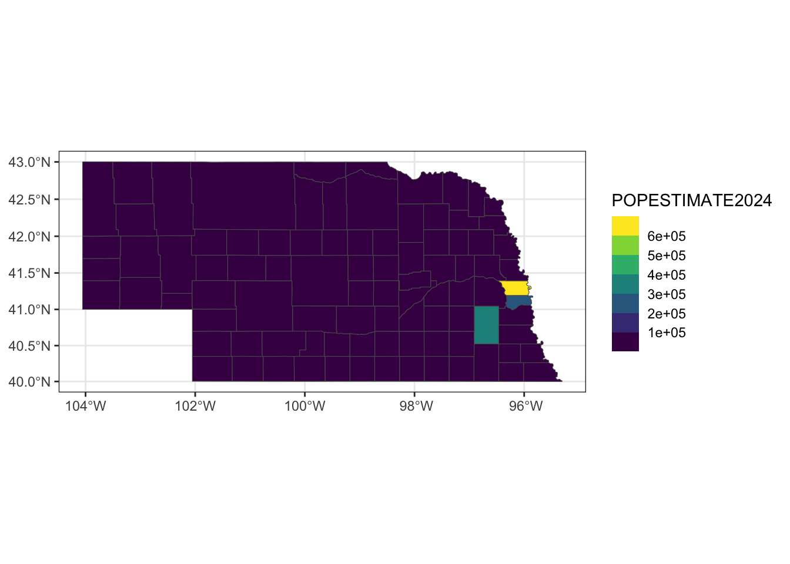

Mini-Module: Making Maps
Dai Shizuka
updated 11/10/25
This is a very quick intro to several ways to make maps in R.
Please note that I am not an expert in cartography or spatial statistics! There are probably better tutorials out there for this.
1. Plot directly from shapefile
Using sf package to plot a map using a shapefile that you downloaded from somewhere.
Load packages:
library(tidyverse)
library(sf)
library(tmap)Download shapefile & plot: Nebraska example
Shapefiles for countries, states, counties, etc. are often available on respective agency websites.
For example, I can download the Nebraska county boundaries shapefile from here: https://www.nebraskamap.gov/datasets/county-boundaries-2/explore

Click on “download” and select “Shapefile”. Uncompress the .zip file and move the whole folder to your data folder.
IMPORTANT: When you download a shapefile, you will be downloading a whole folder (or .zip file containing a whole folder) that includes both the .shp file and several other supplemental files. You need to keep all of these together!
So your .shp file should be saved within a subfolder in your data folder that looks like this:

Now you can import the shapefile using st_read()
function.
ne_shp=st_read("data/NE_County_Boundaries/County_Boundaries.shp")## Reading layer `County_Boundaries' from data source
## `/Users/dshizuka2/Documents/GitHub/RCourse/data/NE_County_Boundaries/County_Boundaries.shp'
## using driver `ESRI Shapefile'
## Simple feature collection with 93 features and 7 fields
## Geometry type: POLYGON
## Dimension: XY
## Bounding box: xmin: -11583190 ymin: 4865930 xmax: -10609650 ymax: 5312216
## Projected CRS: WGS 84 / Pseudo-MercatorYou can see what information is in this dataset using
str()
str(ne_shp)## Classes 'sf' and 'data.frame': 93 obs. of 8 variables:
## $ OBJECTID : int 1 2 3 4 5 6 7 8 9 10 ...
## $ Cnty_Name : chr "Adams" "Antelope" "Arthur" "Banner" ...
## $ Cnty_No : int 1 2 3 4 5 6 7 8 9 10 ...
## $ CountyFIPS: chr "001" "003" "005" "007" ...
## $ GlobalID : chr "{16352331-3262-4EBB-A789-263D6FDBEBB3}" "{FA9D8609-F002-4003-AF46-CE1F04A2B936}" "{FF27D2CA-CA67-4D69-8720-0EF86DB743E5}" "{85111E3B-7990-4C93-A22A-5941EBEC0EBF}" ...
## $ Shape_Leng: num 201309 260687 232241 242686 232721 ...
## $ Shape_Area: num 2.53e+09 4.05e+09 3.33e+09 3.45e+09 3.34e+09 ...
## $ geometry :sfc_POLYGON of length 93; first list element: List of 1
## ..$ : num [1:102, 1:2] -10940269 -10940274 -10940278 -10940281 -10940284 ...
## ..- attr(*, "class")= chr [1:3] "XY" "POLYGON" "sfg"
## - attr(*, "sf_column")= chr "geometry"
## - attr(*, "agr")= Factor w/ 3 levels "constant","aggregate",..: NA NA NA NA NA NA NA
## ..- attr(*, "names")= chr [1:7] "OBJECTID" "Cnty_Name" "Cnty_No" "CountyFIPS" ...plot() in sf
You can use the plot() function on an sf object.
If you just use that function, it will plot different maps with all variables that are in the file.
plot(ne_shp)
If you want to plot the map with one variable, you can use
[] and indicate which variable you want to plot.
plot(ne_shp["Shape_Area"])
If you want to just plot the shapes, you can use
st_geometry()
plot(st_geometry(ne_shp))
Use ggplot
And it’s pretty simple to plot that using the geom_sf()
function:
ggplot() +
geom_sf(data=ne_shp) 
Let’s color the state with the Husker colors (colors according to the university brand guide).
ggplot() +
geom_sf(data=ne_shp, fill="#d00000", color="#f5f1e7") +
theme_bw()
Download shapefile & plot: U.S. example
I downloaded the 2018 US county data from US census bureau: https://www.census.gov/geographies/mapping-files/time-series/geo/carto-boundary-file.html
Again, remember to save the entire folder that you downloaded into your data folder.
Import the .shp file into R:
us_shp=st_read("data/cb_2018_us_county_20m/cb_2018_us_county_20m.shp")## Reading layer `cb_2018_us_county_20m' from data source
## `/Users/dshizuka2/Documents/GitHub/RCourse/data/cb_2018_us_county_20m/cb_2018_us_county_20m.shp'
## using driver `ESRI Shapefile'
## Simple feature collection with 3220 features and 9 fields
## Geometry type: MULTIPOLYGON
## Dimension: XY
## Bounding box: xmin: -179.1743 ymin: 17.91377 xmax: 179.7739 ymax: 71.35256
## Geodetic CRS: NAD83Let’s try plotting this:
ggplot() +
geom_sf(data=us_shp, fill="goldenrod") +
theme_bw()
You can see that this looks funky because part of the Aleutian Islands crosses the international date line, and it appears on the right-hand side of the map.
There are number of ways to deal with this, but they all seem complicated. Let’s just do a quick fix and restrict the x-axis limits:
ggplot() +
geom_sf(data=us_shp, fill="goldenrod") +
coord_sf(xlim=c(-180,-50)) +
theme_bw()
At this scale, the projection method matters.
# ggplot() +
# geom_sf(data=us_shp, fill="goldenrod") +
# st_crs()
# theme_bw()Layering information on top
Also downloaded county-level data. https://www.census.gov/data/datasets/time-series/demo/popest/2020s-counties-detail.html “Annual County Resident Population Estimates by Age, Sex, Race, and Hispanic Origin: April 1, 2020 to July 1, 2024 (CC-EST2024-ALLDATA)” –> select “United States”
Read the county-level data.
co_data=read.csv("data/co-est2024-alldata.csv")
head(co_data)## SUMLEV REGION DIVISION STATE COUNTY STNAME CTYNAME ESTIMATESBASE2020
## 1 40 3 6 1 0 Alabama Alabama 5025369
## 2 50 3 6 1 1 Alabama Autauga County 58800
## 3 50 3 6 1 3 Alabama Baldwin County 231767
## 4 50 3 6 1 5 Alabama Barbour County 25226
## 5 50 3 6 1 7 Alabama Bibb County 22284
## 6 50 3 6 1 9 Alabama Blount County 59130
## POPESTIMATE2020 POPESTIMATE2021 POPESTIMATE2022 POPESTIMATE2023
## 1 5033094 5049196 5076181 5117673
## 2 58909 59191 59736 60436
## 3 233244 239411 246577 254107
## 4 24975 24517 24722 24644
## 5 22176 22344 21983 21890
## 6 59110 59050 59491 59777
## POPESTIMATE2024 NPOPCHG2020 NPOPCHG2021 NPOPCHG2022 NPOPCHG2023 NPOPCHG2024
## 1 5157699 7725 16102 26985 41492 40026
## 2 61464 109 282 545 700 1028
## 3 261608 1477 6167 7166 7530 7501
## 4 24358 -251 -458 205 -78 -286
## 5 22258 -108 168 -361 -93 368
## 6 60163 -20 -60 441 286 386
## BIRTHS2020 BIRTHS2021 BIRTHS2022 BIRTHS2023 BIRTHS2024 DEATHS2020 DEATHS2021
## 1 13867 57184 58103 58528 57541 15146 69134
## 2 162 686 718 732 738 175 693
## 3 560 2337 2448 2546 2505 600 2947
## 4 60 270 269 275 259 91 389
## 5 56 240 259 248 250 54 324
## 6 137 654 688 696 692 200 876
## DEATHS2022 DEATHS2023 DEATHS2024 NATURALCHG2020 NATURALCHG2021 NATURALCHG2022
## 1 67246 60059 59273 -1279 -11950 -9143
## 2 710 627 569 -13 -7 8
## 3 3053 2680 2655 -40 -610 -605
## 4 350 328 340 -31 -119 -81
## 5 330 264 256 2 -84 -71
## 6 875 805 782 -63 -222 -187
## NATURALCHG2023 NATURALCHG2024 INTERNATIONALMIG2020 INTERNATIONALMIG2021
## 1 -1531 -1732 133 1804
## 2 105 169 0 15
## 3 -134 -150 13 102
## 4 -53 -81 0 0
## 5 -16 -6 0 1
## 6 -109 -90 1 9
## INTERNATIONALMIG2022 INTERNATIONALMIG2023 INTERNATIONALMIG2024
## 1 8155 12995 15763
## 2 54 113 136
## 3 451 889 1075
## 4 22 21 32
## 5 2 1 2
## 6 36 41 55
## DOMESTICMIG2020 DOMESTICMIG2021 DOMESTICMIG2022 DOMESTICMIG2023
## 1 9757 25175 28226 29946
## 2 101 226 508 490
## 3 1631 6967 6962 6627
## 4 -177 -334 248 -40
## 5 -97 248 -300 -76
## 6 21 108 599 366
## DOMESTICMIG2024 NETMIG2020 NETMIG2021 NETMIG2022 NETMIG2023 NETMIG2024
## 1 26028 9890 26979 36381 42941 41791
## 2 727 101 241 562 603 863
## 3 6570 1644 7069 7413 7516 7645
## 4 -236 -177 -334 270 -19 -204
## 5 373 -97 249 -298 -75 375
## 6 425 22 117 635 407 480
## RESIDUAL2020 RESIDUAL2021 RESIDUAL2022 RESIDUAL2023 RESIDUAL2024
## 1 -886 1073 -253 82 -33
## 2 21 48 -25 -8 -4
## 3 -127 -292 358 148 6
## 4 -43 -5 16 -6 -1
## 5 -13 3 8 -2 -1
## 6 21 45 -7 -12 -4
## GQESTIMATESBASE2020 GQESTIMATES2020 GQESTIMATES2021 GQESTIMATES2022
## 1 128979 132343 132586 139745
## 2 483 483 467 471
## 3 3549 3451 3280 3381
## 4 2718 2486 2226 2696
## 5 2144 2066 1994 2030
## 6 618 618 582 597
## GQESTIMATES2023 GQESTIMATES2024 RBIRTH2021 RBIRTH2022 RBIRTH2023 RBIRTH2024
## 1 142854 145520 11.34345 11.47671 11.48300 11.199789
## 2 483 499 11.61727 12.07463 12.18254 12.108285
## 3 3448 3528 9.88882 10.07432 10.17009 9.714668
## 4 2703 2662 10.91085 10.92630 11.14127 10.570997
## 5 1897 2105 10.78167 11.68588 11.30536 11.325541
## 6 614 614 11.06974 11.60780 11.67119 11.539103
## RDEATH2021 RDEATH2022 RDEATH2023 RDEATH2024 RNATURALCHG2021 RNATURALCHG2022
## 1 13.71395 13.28267 11.78337 11.536906 -2.3704932 -1.8059574
## 2 11.73582 11.94010 10.43504 9.335521 -0.1185436 0.1345363
## 3 12.46998 12.56410 10.70536 10.296385 -2.5811639 -2.4897734
## 4 15.71971 14.21637 13.28850 13.876985 -4.8088580 -3.2900749
## 5 14.55526 14.88935 12.03474 11.597354 -3.7735849 -3.2034652
## 6 14.82735 14.76282 13.49901 13.039853 -3.7576168 -3.1550265
## RNATURALCHG2023 RNATURALCHG2024 RINTERNATIONALMIG2021 RINTERNATIONALMIG2022
## 1 -0.3003771 -0.3371167 0.35785521 1.61080422
## 2 1.7474953 2.7727646 0.25402202 0.90812011
## 3 -0.5352678 -0.5817166 0.43160445 1.85601291
## 4 -2.1472268 -3.3059875 0.00000000 0.89360060
## 5 -0.7293780 -0.2718130 0.04492363 0.09023846
## 6 -1.8278163 -1.5007504 0.15233582 0.60738479
## RINTERNATIONALMIG2023 RINTERNATIONALMIG2024 RDOMESTICMIG2021 RDOMESTICMIG2022
## 1 2.54957546 3.06811277 4.993905 5.575299
## 2 1.88063775 2.23133716 3.827265 8.543056
## 3 3.55114204 4.16896930 29.480276 28.650913
## 4 0.85078799 1.30606914 -13.497131 10.073316
## 5 0.04558612 0.09060433 11.141060 -13.535768
## 6 0.68752725 0.91712523 1.828030 10.106208
## RDOMESTICMIG2023 RDOMESTICMIG2024 RNETMIG2021 RNETMIG2022 RNETMIG2023
## 1 5.875305 5.066094 5.351760 7.186103 8.4248803
## 2 8.154978 11.927810 4.081287 9.451176 10.0356156
## 3 26.471787 25.479189 29.911881 30.506926 30.0229286
## 4 -1.620549 -9.632260 -13.497131 10.966916 -0.7697606
## 5 -3.464545 16.897708 11.185984 -13.445530 -3.4189593
## 6 6.137438 7.086877 1.980366 10.713593 6.8249656
## RNETMIG2024
## 1 8.134207
## 2 14.159147
## 3 29.648158
## 4 -8.326191
## 5 16.988312
## 6 8.004002Mapping county data on map of Nebraska
ne_full2024=ne_shp %>% mutate(CountyFIPS=as.numeric(CountyFIPS)) %>% left_join(co_data %>% filter(STNAME=="Nebraska"), by=join_by("CountyFIPS"=="COUNTY"))ggplot() +
geom_sf(data=ne_full2024, aes(fill=POPESTIMATE2024)) +
theme_bw()
ggplot() +
geom_sf(data=ne_full2024, aes(fill=RBIRTH2024)) +
theme_bw()
unl=data.frame(long=693966.4754863544, lat=4521321.303476614 )
ggplot() +
geom_sf(data=ne_full2024, aes(fill=NPOPCHG2024)) +
annotate("point", x=unl$long, y=unl$lat) +
theme_bw() 